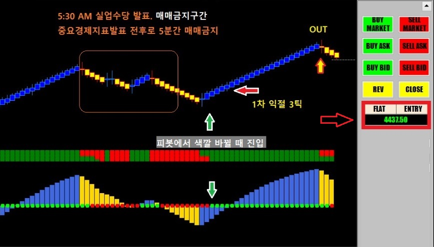
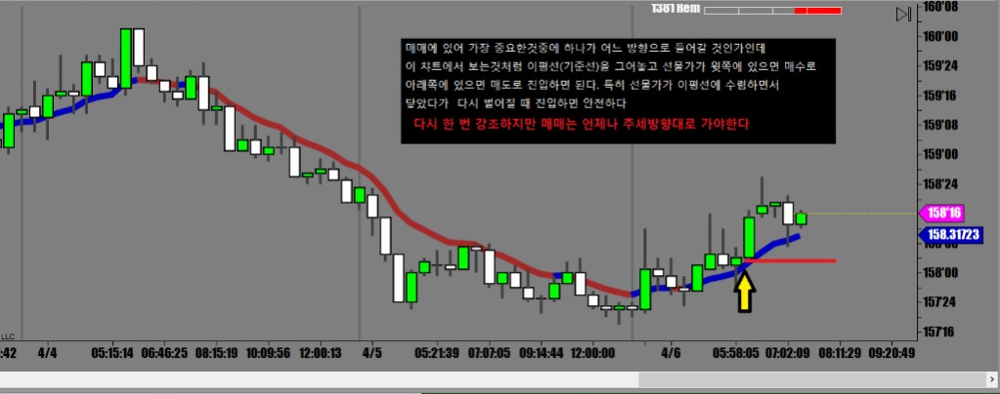

해외선물 - 경제지표 발표있는 날
국채매매에 있어 가장 중요한것이 FRB의 Monetary Policy changing 이나 실업수당신청건수 같은
경제지표 발표라 할수 있다
이자율을 올린다든지 실업수당이 늘어났다든지하는 뉴스가 나올 때 국채선물은 크게 움직인다
오늘도 오전 5시30분 (서부시간) 실업수당 신청건수 발표가 나오는 날인지라
국채선물 매매하기 좋은 날
다시 한 번 부연설명을 하자면
경제지표 발표가 뭐라고 나오건 우린 관심을 가질 필요가 없음
뉴스 직후 시장이 반응하는 대로 따라만 가면 됨
떡락하면 ..? 아...나쁜 뉴스가 나왔구만
떡상하면... ? 아..좋은 뉴스가 나왔구나
움직임이 없으면 별 문제 없구나..
어차피 중요지표 발표 전후 5분간은 매매 금지기 때문에 내용을 알아야 할 필요도 없고 알아봤자
어떤 뉴스에 장이 어떤식으로 얼마나 반음할지 어차피 아무도 모름
어제 국채가 조금 활력을 되찾은듯 하여 오늘은 국채선물중에 가장 움직임이 큰 Ultra Bond(UB)를 매매
한국에서는 아직도 UB를 매매할 수 없다는게 아쉬움
거래하시는 브로커에 계속해서 요청을 하시면 될수 있을지도.
경제지표발표 전 후로 5분간은 매매중지
그 후에 중요 지지/저항에서 색깔 바뀌는 순간 진입하면 됨

매매를 결정할 떄 가장 중요한것이 어느 방향으로 탈것인가인데
그것을 결정하는 쉬운 방법은 큰차트를 만들어놓고 큰 그림을 보는것
현재 선물의 진행방향을 쉽게 파악할 수 있는 차트를 만들어놔야 한다

차트에 표시된 화살표 지점에서 진입했는데
이평선을 하방으로 뚫으려고 하다 긴꼬리를 만들면서 다시 밀려 올라가는 상황이고
몸통은 이평선 위에서 지지를 받은 상황이다
매매에 실패하는 이유는 여러가지가 있겠지만
대부분 반대로 타서 손절에 걸린다
어느쪽으로 언제 올라타느냐만 제대로 할 줄 알면 매매는 이미 90% 성공이다
그 나머지는 언제 포지션 정리할것인지 결정하는건데
앞의 포스팅에서 올려놨듯이 직전캔들 끝부분에 손절을 걸고 따라붙으면 되기 때문에 크게 신경 쓸 일이 아니다
기간이 긴 차트를 띄워서 큰 그림을 보면서 매매하면 진입방향 잡기가 수월해진다
그것은 마치 숲속에 들어가있을 땐 자기가 어디 있는지 잘 알 수가 없지만
드론을 높이 띄워서 숲 전체를 보면 어느 방향으로 나가야하는지 쉽게 알 수 있는것과 같다
그렇게 현재 진행방향을 파악하고 나면 언제나 그 방향쪽으로만 매매하면 된다